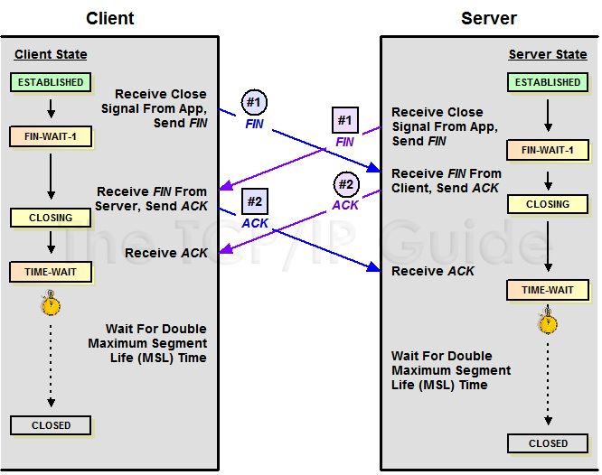

【轉】TCP 的那些事兒（上）
TCP是一個巨複雜的協議，因爲他要解決很多問題，而這些問題又帶出了很多子問題和陰暗面。所以學習 TCP 本身是個比較痛苦的過程，但對於學習的過程卻能讓人有很多收穫。關於 TCP 這個協議的細節，我還是推薦你去看 W.Richard Stevens 的《TCP/IP 詳解 卷1：協議》（當然，你也可以去讀一下 RFC793 以及後面 N 多的 RFC）。另外，本文我會使用英文術語，這樣方便你通過這些英文關鍵詞來查找相關的技術文檔。
之所以想寫這篇文章，目的有三個，
- 一個是想鍛鍊一下自己是否可以用簡單的篇幅把這麼複雜的TCP協議描清楚的能力。
- 另一個是覺得現在的好多程序員基本上不會認認真真地讀本書，喜歡快餐文化，所以，希望這篇快餐文章可以讓你對TCP這個古典技術有所瞭解，並能體會到軟件設計中的種種難處。並且你可以從中有一些軟件設計上的收穫。
- 最重要的希望這些基礎知識可以讓你搞清很多以前一些似是而非的東西，並且你能意識到基礎的重要。
所以，本文不會面面俱到，只是對 TCP 協議、算法和原理的科普。
我本來只想寫一個篇幅的文章的，但是 TCP 真 TMD 的複雜，比 C++ 複雜多了，這 30 多年來，各種優化變種爭論和修改。所以，寫着寫着就發現只有砍成兩篇。
- 上篇中，主要向你介紹TCP協議的定義和丟包時的重傳機制。
- 下篇中，重點介紹TCP的流迭、擁塞處理。
廢話少說，首先，我們需要知道 TCP 在網絡 OSI 的七層模型中的第四層 —— 傳輸層(Transport)，IP 在第三層 —— 網絡層(Network)，ARP 在第二層 —— 數據鏈路層(Data Link)，在第二層上的數據，我們叫 Frame，在第三層上的數據叫 Packet，第四層的數據叫 Segment。
首先，我們需要知道，我們程序的數據首先會打到 TCP 的 Segment 中，然後 TCP 的 Segment 會打到 IP 的 Packet 中，然後再打到以太網 Ethernet 的 Frame 中，傳到對端後，各個層解析自己的協議，然後把數據交給更高層的協議處理。
TCP頭格式
接下來，我們來看一下 TCP 頭的格式

你需要注意這麼幾點：
- TCP 的包是沒有 IP 地址的，那是 IP 層上的事。但是有源端口和目標端口。
- 一個 TCP 連接需要四個元組來表示是同一個連接（
src_ip,src_port,dst_ip,dst_port）準確說是五元組，還有一個是協議。但因爲這裏只是說TCP協議，所以，這裏我只說四元組。 - 注意上圖中的四個非常重要的東西：
- Sequence Number 是包的序號，用來解決網絡包亂序（reordering）問題。
- Acknowledgement Number 就是 ACK —— 用於確認收到，用來解決不丟包的問題。
- Window 又叫 Advertised-Window，也就是著名的滑動窗口（Sliding Window），用於解決流控的。
- TCP Flag ，也就是包的類型，主要是用於操控 TCP 的狀態機的。
關於其它的東西，可以參看下面的圖示

TCP的狀態機
其實，網絡上的傳輸是沒有連接的，包括 TCP 也是一樣的。而 TCP 所謂的“連接”，其實只不過是在通訊的雙方維護一個“連接狀態”，讓它看上去好像有連接一樣。所以，TCP 的狀態變換是非常重要的。
下面是：“TCP 協議的狀態機”（圖片來源） 和 “TCP 建鏈接”、“TCP 斷鏈接”、“傳數據” 的對照圖，我把兩個圖並排放在一起，這樣方便在你對照着看。另外，下面這兩個圖非常非常的重要，你一定要記牢。（吐個槽：看到這樣複雜的狀態機，就知道這個協議有多複雜，複雜的東西總是有很多坑爹的事情，所以 TCP 協議其實也挺坑爹的）


很多人會問，爲什麼建鏈接要 3 次握手，斷鏈接需要 4 次揮手？
- 對於建鏈接的 3 次握手，主要是要初始化 Sequence Number 的初始值。通信的雙方要互相通知對方自己的初始化的 Sequence Number（縮寫爲 ISN：Inital Sequence Number） —— 所以叫 SYN，全稱 Synchronize Sequence Numbers。也就上圖中的 x 和 y。這個號要作爲以後的數據通信的序號，以保證應用層接收到的數據不會因爲網絡上的傳輸的問題而亂序（TCP 會用這個序號來拼接數據）。
- 對於 4 次揮手，其實你仔細看是 2 次，因爲 TCP 是全雙工的，所以，發送方和接收方都需要 Fin 和 Ack。只不過，有一方是被動的，所以看上去就成了所謂的 4 次揮手。如果兩邊同時斷連接，那就會就進入到 CLOSING 狀態，然後到達T IME_WAIT 狀態。下圖是雙方同時斷連接的示意圖（你同樣可以對照着 TCP 狀態機看）：

另外，有幾個事情需要注意一下：
- 關於建連接時 SYN 超時。試想一下，如果 server 端接到了 client 發的 SYN 後回了 SYN-ACK 後 client 掉線了，server 端沒有收到 client 回來的 ACK，那麼，這個連接處於一箇中間狀態，即沒成功，也沒失敗。於是，server 端如果在一定時間內沒有收到的 TCP 會重發 SYN-ACK。在 Linux 下，默認重試次數爲 5 次，重試的間隔時間從 1s 開始每次都翻售，5 次的重試時間間隔爲 1s, 2s, 4s, 8s, 16s，總共 31s，第 5 次發出後還要等 32s 都知道第 5 次也超時了，所以，總共需要 1s + 2s + 4s+ 8s+ 16s + 32s = 2^6 - 1 = 63s，TCP 纔會把斷開這個連接。
- 關於 SYN Flood 攻擊。一些惡意的人就爲此製造了 SYN Flood 攻擊 —— 給服務器發了一個 SYN 後，就下線了，於是服務器需要默認等 63s 纔會斷開連接，這樣，攻擊者就可以把服務器的 syn 連接的隊列耗盡，讓正常的連接請求不能處理。於是，Linux 下給了一個叫
tcp_syncookies的參數來應對這個事 —— 當 SYN 隊列滿了後，TCP 會通過源地址端口、目標地址端口和時間戳打造出一個特別的 Sequence Number 發回去（又叫 cookie），如果是攻擊者則不會有響應，如果是正常連接，則會把這個 SYN Cookie 發回來，然後服務端可以通過 cookie 建連接（即使你不在 SYN 隊列中）。請注意，請先千萬別用tcp_syncookies來處理正常的大負載的連接的情況。因爲，synccookies是妥協版的 TCP 協議，並不嚴謹。對於正常的請求，你應該調整三個 TCP 參數可供你選擇，第一個是：tcp_synack_retries可以用他來減少重試次數；第二個是：tcp_max_syn_backlog，可以增大 SYN 連接數；第三個是：tcp_abort_on_overflow處理不過來乾脆就直接拒絕連接了。 - 關於 ISN 的初始化。ISN 是不能 hard code 的，不然會出問題的 —— 比如：如果連接建好後始終用 1 來做 ISN，如果 client 發了 30 個 segment 過去，但是網絡斷了，於是 client 重連，又用了 1 做 ISN，但是之前連接的那些包到了，於是就被當成了新連接的包，此時，client 的 Sequence Number 可能是 3，而 Server 端認爲 client 端的這個號是 30 了。全亂了。RFC793 中說，ISN 會和一個假的時鐘綁在一起，這個時鐘會在每4微秒對 ISN 做加一操作，直到超過 2^32，又從 0 開始。這樣，一個ISN的週期大約是 4.55 個小時。因爲，我們假設我們的 TCP Segment 在網絡上的存活時間不會超過 Maximum Segment Lifetime（縮寫爲 MSL - Wikipedia 語條），所以，只要 MSL 的值小於 4.55 小時，那麼，我們就不會重用到 ISN。
- 關於 MSL 和 TIME_WAIT。通過上面的 ISN 的描述，相信你也知道 MSL 是怎麼來的了。我們注意到，在 TCP 的狀態圖中，從 TIME_WAIT 狀態到 CLOSED 狀態，有一個超時設置，這個超時設置是 2 * MSL（RFC793 定義了 MSL 爲 2 分鐘，Linux 設置成了 30s）爲什麼要這有 TIME_WAIT？爲什麼不直接給轉成 CLOSED 狀態呢？主要有兩個原因：
- TIME_WAIT 確保有足夠的時間讓對端收到了 ACK，如果被動關閉的那方沒有收到 Ack，就會觸發被動端重發 Fin，一來一去正好 2 個MSL；
- 有足夠的時間讓這個連接不會跟後面的連接混在一起（你要知道，有些自做主張的路由器會緩存IP數據包，如果連接被重用了，那麼這些延遲收到的包就有可能會跟新連接混在一起）。你可以看看這篇文章《TIME_WAIT and its design implications for protocols and scalable client server systems》
- 關於 TIME_WAIT 數量太多。從上面的描述我們可以知道，TIME_WAIT 是個很重要的狀態，但是如果在大並發的短鏈接下，TIME_WAIT 就會太多，這也會消耗很多系統資源。只要搜一下，你就會發現，十有八九的處理方式都是教你設置兩個參數，一個叫
tcp_tw_reuse，另一個叫tcp_tw_recycle的參數，這兩個參數默認值都是被關閉的，後者 recyle 比前者 resue 更爲激進，resue 要溫柔一些。另外，如果使用tcp_tw_reuse，必需設置tcp_timestamps = 1，否則無效。這裏，你一定要注意，打開這兩個參數會有比較大的坑 —— 可能會讓 TCP 連接出一些詭異的問題（因爲如上述一樣，如果不等待超時重用連接的話，新的連接可能會建不上。正如官方文檔上說的一樣“It should not be changed without advice/request of technical experts”）。- 關於
tcp_tw_reuse。官方文檔上說tcp_tw_reuse加上tcp_timestamps（又叫 PAWS, for Protection Against Wrapped Sequence Numbers）可以保證協議的角度上的安全，但是你需要tcp_timestamps在兩邊都被打開（你可以讀一下tcp_twsk_unique的源碼 ）。我個人估計還是有一些場景會有問題。 - 關於
tcp_tw_recycle。如果是tcp_tw_recycle被打開了話，會假設對端開啓了tcp_timestamps，然後會去比較時間戳，如果時間戳變大了，就可以重用。但是，如果對端是一個 NAT 網絡的話（如：一個公司只用一個 IP 出公網）或是對端的 IP 被另一臺重用了，這個事就複雜了。建鏈接的 SYN 可能就被直接丟掉了（你可能會看到 connection time out 的錯誤）（如果你想觀摩一下 Linux 的內核代碼，請參看源碼tcp_timewait_state_process）。 - 關於
tcp_max_tw_buckets。這個是控制並發的 TIME_WAIT 的數量，默認值是 180000，如果超限，那麼，系統會把多的給 destory 掉，然後在日誌裏打一個警告（如：time wait bucket table overflow），官網文檔說這個參數是用來對抗 DDoS 攻擊的。也說的默認值 180000 並不小。這個還是需要根據實際情況考慮。
- 關於
Again，使用
tcp_tw_reuse和tcp_tw_recycle來解決 TIME_WAIT 的問題是非常非常危險的，因爲這兩個參數違反了TCP協議（RFC 1122） 。
數據傳輸中的 Sequence Number
下圖是我從 Wireshark 中截了個我在訪問 coolshell.cn 時的有數據傳輸的圖給你看一下，SeqNum 是怎麼變的。（使用 Wireshark 菜單中的 Statistics -> Flow Graph…）

你可以看到，SeqNum 的增加是和傳輸的字節數相關的。上圖中，三次握手後，來了兩個 Len:1440 的包，而第二個包的 SeqNum 就成了 1441。然後第一個 ACK 回的是 1441，表示第一個 1440 收到了。
注意：如果你用 Wireshark 抓包程序看 3 次握手，你會發現 SeqNum 總是爲0，不是這樣的，Wireshark 爲了顯示更友好，使用了 Relative SeqNum —— 相對序號，你只要在右鍵菜單中的 protocol preference 中取消掉就可以看到“Absolute SeqNum”了。
TCP重傳機制
TCP 要保證所有的數據包都可以到達，所以，必需要有重傳機制。
注意，接收端給發送端的 Ack 確認只會確認最後一個連續的包，比如，發送端發了 1,2,3,4,5 一共五份數據，接收端收到了 1，2，於是回 ack 3，然後收到了 4（注意此時 3 沒收到），此時的 TCP 會怎麼辦？我們要知道，因爲正如前面所說的，SeqNum 和 Ack 是以字節數爲單位，所以 ack 的時候，不能跳着確認，只能確認最大的連續收到的包，不然，發送端就以爲之前的都收到了。
超時重傳機制
一種是不回 ack，死等 3，當發送方發現收不到 3 的 ack 超時後，會重傳 3。一旦接收方收到 3 後，會 ack 回 4 —— 意味着 3 和 4 都收到了。
但是，這種方式會有比較嚴重的問題，那就是因爲要死等 3，所以會導致 4 和 5 即便已經收到了，而發送方也完全不知道發生了什麼事，因爲沒有收到 Ack，所以，發送方可能會悲觀地認爲也丟了，所以有可能也會導致 4 和 5 的重傳。
對此有兩種選擇：
- 一種是僅重傳 timeout 的包。也就是第 3 份數據。
- 另一種是重傳 timeout 後所有的數據，也就是第 3，4，5 這三份數據。
這兩種方式有好也有不好。第一種會節省帶寬，但是慢，第二種會快一點，但是會浪費帶寬，也可能會有無用功。但總體來說都不好。因爲都在等 timeout，timeout 可能會很長（在下篇會說 TCP 是怎麼動態地計算出 timeout 的）
快速重傳機制
於是，TCP 引入了一種叫 Fast Retransmit 的算法，不以時間驅動，而以數據驅動重傳。也就是說，如果，包沒有連續到達，就 ack 最後那個可能被丟了的包，如果發送方連續收到 3 次相同的 ack，就重傳。Fast Retransmit 的好處是不用等 timeout 了再重傳。
比如：如果發送方發出了 1，2，3，4，5 份數據，第一份先到送了，於是就 ack 回 2，結果 2 因爲某些原因沒收到，3 到達了，於是還是 ack 回 2，後面的 4 和 5 都到了，但是還是 ack 回 2，因爲 2 還是沒有收到，於是發送端收到了三個 ack = 2 的確認，知道了 2 還沒有到，於是就馬上重轉 2。然後，接收端收到了 2，此時因爲 3，4，5 都收到了，於是 ack 回 6。示意圖如下：

Fast Retransmit 只解決了一個問題，就是 timeout 的問題，它依然面臨一個艱難的選擇，就是重轉之前的一個還是重裝所有的問題。對於上面的示例來說，是重傳 #2 呢還是重傳 #2，#3，#4，#5 呢？因爲發送端並不清楚這連續的 3 個 ack(2) 是誰傳回來的？也許發送端發了 20 份數據，是 #6，#10，#20 傳來的呢。這樣，發送端很有可能要重傳從 2 到 20 的這堆數據（這就是某些 TCP 的實際的實現）。可見，這是一把雙刃劍。
SACK 方法
另外一種更好的方式叫：Selective Acknowledgment (SACK)（參看 RFC 2018），這種方式需要在 TCP 頭里加一個 SACK 的東西，ACK 還是 Fast Retransmit 的 ACK，SACK 則是彙報收到的數據碎版。參看下圖：

這樣，在發送端就可以根據回傳的 SACK 來知道哪些數據到了，哪些沒有到。於是就優化了 Fast Retransmit 的算法。當然，這個協議需要兩邊都支持。在 Linux 下，可以通過 tcp_sack 參數打開這個功能（Linux 2.4 後默認打開）。
這裏還需要注意一個問題 —— 接收方 Reneging，所謂 Reneging 的意思就是接收方有權把已經報給發送端 SACK 裏的數據給丟了。這樣幹是不被鼓勵的，因爲這個事會把問題複雜化了，但是，接收方這麼做可能會有些極端情況，比如要把內存給別的更重要的東西。所以，發送方也不能完全依賴 SACK，還是要依賴 ACK，並維護 Time-Out，如果後續的 ACK 沒有增長，那麼還是要把 SACK 的東西重傳，另外，接收端這邊永遠不能把 SACK 的包標記爲 Ack。
注意：SACK 會消費發送方的資源，試想，如果一個攻擊者給數據發送方發一堆 SACK 的選項，這會導致發送方開始要重傳甚至遍歷已經發出的數據，這會消耗很多發送端的資源。詳細的東西請參看《TCP SACK的性能權衡》
Duplicate SACK – 重複收到數據的問題
Duplicate SACK 又稱 D-SACK，其主要使用了 SACK 來告訴發送方有哪些數據被重複接收了。RFC-2833 裏有詳細描述和示例。下面舉幾個例子（來源於 RFC-2833）
D-SACK使用了SACK的第一個段來做標誌，
- 如果 SACK 的第一個段的範圍被 ACK 所覆蓋，那麼就是 D-SACK
- 如果 SACK 的第一個段的範圍被 SACK 的第二個段覆蓋，那麼就是 D-SACK
示例一：ACK 丟包
下面的示例中，丟了兩個 ACK，所以，發送端重傳了第一個數據包（3000 - 3499），於是接收端發現重複收到，於是回了一個 SACK = 3000 - 3500，因爲 ACK 都到了 4000 意味着收到了 4000 之前的所有數據，所以這個 SACK 就是 D-SACK —— 旨在告訴發送端我收到了重複的數據，而且我們的發送端還知道，數據包沒有丟，丟的是 ACK 包。
1 | Transmitted Received ACK Sent |
示例二：網絡延誤
下面的示例中，網絡包（1000 - 1499）被網絡給延誤了，導致發送方沒有收到 ACK，而後面到達的三個包觸發了“Fast Retransmit 算法”，所以重傳，但重傳時，被延誤的包又到了，所以，回了一個 SACK = 1000 - 1500，因爲 ACK 已到了 3000，所以，這個 SACK 是 D-SACK —— 標識收到了重複的包。
這個案例下，發送端知道之前因爲“Fast Retransmit 算法”觸發的重傳不是因爲發出去的包丟了，也不是因爲迴應的 ACK 包丟了，而是因爲網絡延時了。
1 | Transmitted Received ACK Sent |
可見，引入了 D-SACK，有這麼幾個好處：
- 可以讓發送方知道，是發出去的包丟了，還是回來的 ACK 包丟了。
- 是不是自己的 timeout 太小了，導致重傳。
- 網絡上出現了先發的包後到的情況（又稱 reordering）
- 網絡上是不是把我的數據包給複製了。
知道這些東西可以很好得幫助TCP瞭解網絡情況，從而可以更好的做網絡上的流控。
Linux 下的 tcp_dsack 參數用於開啓這個功能（Linux 2.4 後默認打開）
好了，上篇就到這裏結束了。如果你覺得我寫得還比較淺顯易懂，那麼，歡迎移步看下篇《TCP的那些事（下）》
[原文鏈接：http://coolshell.cn/articles/11564.html]